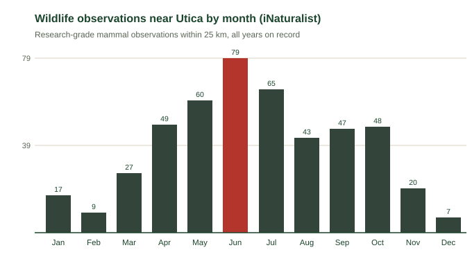
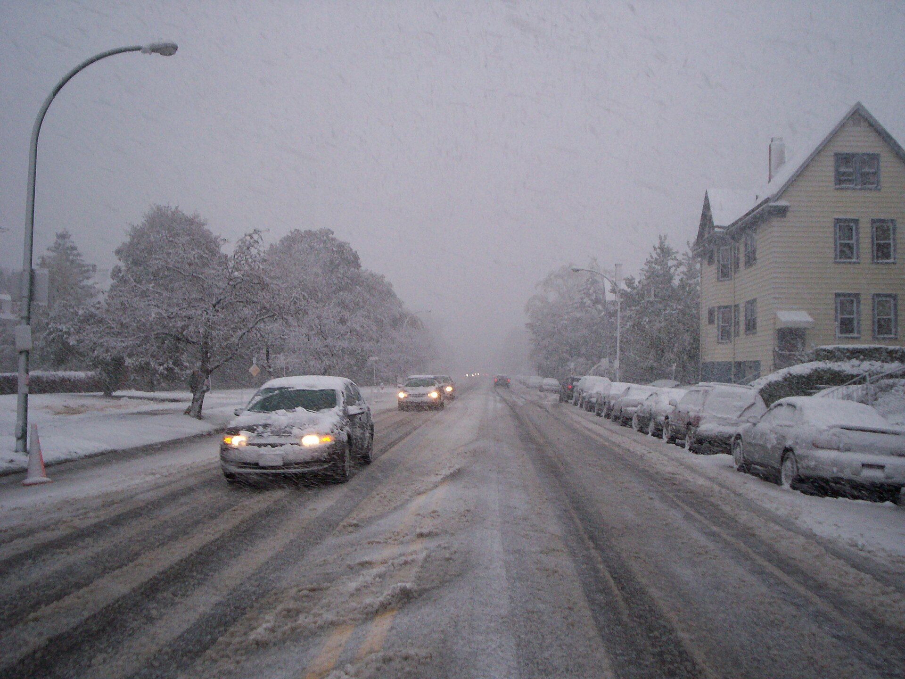

Oneida County - upstate New York
Utica Wildlife Calendar: What Is Active, Month by Month
A working calendar for Utica homeowners: when each attic and den animal is active, when the law says work can and cannot happen, and what to do in each month. The activity numbers are real observation records from around Utica, not a generic national chart.
Average temperatures frame the year here: about 25 degrees F in January and 71 degrees F in July (Open-Meteo ERA5, 2020 to 2024). Historic housing styles citywide include Greek Revival, Italianate, Gothic Revival and Neoclassical examples
Wildlife activity near Utica, recorded month by month

| Month | Mammal observations | Bird observations | What Utica homeowners should do |
|---|---|---|---|
| January | 17 | 18 | After snow or ice, walk your roofline from the ground and note new gaps at soffits. Any new sound this month is a settled tenant, so book the inspection rather than waiting for spring. |
| February | 9 | 16 | Keep dogs leashed at dusk near decks and sheds. If you suspect a den under the porch, book the kit check now, before the May births make everything slower. |
| March | 27 | 103 | Never seal a hole this month without a young check first. If you are hearing noises, the inspection belongs in March, while the timing options are still open. |
| April | 49 | 192 | Check the chimney from the ground for returning swifts and missing caps. If last year had birds, book the post-season cap work now so it lands on time. |
| May | 60 | 188 | Do not start bat work: the maternity blackout runs to August 15. Raccoon and squirrel jobs need a young check before any one-way door is fitted. |
| June | 79 | 130 | Listen at dawn and dusk and write down what you hear, where, and when. A dated note of sounds is genuinely useful to an inspector and shortens the first visit. |
| July | 65 | 130 | Watch for young raccoons travelling with their mother at dusk. A family still in residence means the eviction waits until the young are fully mobile. |
| August | 43 | 99 | After August 15, bat exclusion can restart once pups are confirmed flying. Book nest removal and chimney cap fitting for the weeks right after the swifts leave. |
| September | 47 | 94 | The best sealing month of the year. Work the whole inspection list: soffits, vents, chimney cap, deck edges and foundation seams, while the weather still allows it. |
| October | 48 | 54 | Do the pre-winter entry check before the first hard freeze: quarter-inch gaps for mice, deck screening, garage door seals. Note any attic sounds for a fast diagnosis. |
| November | 20 | 58 | Store pet food and bird seed sealed and indoors. Take one look in the attic for droppings or nests before the house fills up for the holidays. |
| December | 7 | 25 | An animal in the living space is an emergency call at any date. Otherwise, note the problems now and book spring inspections early, before the March rush. |
What is active around Utica, month by month

- Jan: Deep winter. Observation records sit at their lowest, which mostly means the observers are indoors too. Bats are hibernating in place, mice are established in attics, and skunks den up through cold snaps.
- Feb: Skunk mating season: males roam, and dog encounters at dusk rise. Groundhogs are still underground. Late-winter thaws bring the first raccoon den scouting along rooflines.
- Mar: Raccoon kits begin arriving late in the month. Groundhogs emerge hungry. Starlings start probing vent runs, and mice are still travelling wall voids nightly.
- Apr: Kit season in full swing. Squirrels raise spring litters in attics, groundhogs graze openly, and chimney swifts begin arriving at the end of the month.
- May: Bat maternity season opens: from May 1, excluding an occupied bat colony is off the table in New York. Skunk kits are born under porches. Observation counts climb steeply as everything becomes visible.
- Jun: The loud attic month: raccoon kits are mobile and noisy, squirrel litters are active at dawn, and swift nestlings keep occupied chimneys chirping through the day.
- Jul: Young animals disperse and test new gaps. Bats are raising pups and cannot be excluded. Groundhogs feed hard and garden damage peaks.
- Aug: The turning month. Swift young fledge and colonies leave by early autumn; bat pups are flying, so the exclusion window reopens after August 15. Post-season nest removal season begins.
- Sep: Young are independent, colonies are leaving, and mild weather still allows ladder work. The records stay busy because everything is moving, fattening or dispersing.
- Oct: The entry push opens: every species on this page is looking for winter shelter. Mice move indoors with the first cold nights. The second bat blackout begins October 1 for colonies hibernating in place.
- Nov: Groundhogs are underground for the winter. Squirrels cache food and test rooflines, raccoons den up on cold nights, and attic mouse populations build quietly.
- Dec: The winter pattern is set and observation records bottom out. Attic tenants are settled in; the work is inspections, the odd emergency, and planning spring sealing.
The two hard rules on this calendar
Bat exclusion blackouts
New York bat work stops twice a year. From May 1 to August 15, maternity colonies are raising flightless pups and exclusion is off the table. From October 1 to March 31, colonies in place are hibernating and are likewise left alone. Everything bat-shaped in Utica is scheduled in the two windows between those dates, which is why the calendar pushes inspections in spring and sealing in September.
Babies change the plan, March to June
Raccoon kits, squirrel litters and skunk kits all arrive in the same quarter. Any eviction in that window starts with a young check, and sealing waits until the family can move together. The autumn entry push, October to March, is the mirror image: no young to protect, but every animal in Oneida County is looking for a way in, which makes it the worst season to leave a known gap open.
How to read the observation numbers honestly
These counts come from research-grade iNaturalist observations within 25 km of Utica: 471 mammal observations and 1,107 bird observations in total. Sightings need observers, so spring and summer always look busier than the animals alone would explain, and deep winter quieter. The numbers show proportion and timing, which months the animals around Utica are demonstrably out and moving. They are not a census, and no page on this site treats them as one.
Utica wildlife calendar: questions and answers
What is the best month to seal my Utica home against wildlife?
September, with October as the runner-up. Young animals are independent, bat and swift colonies have left or are leaving, the weather still allows ladder work, and the sealing lands just before the October to March entry push. February is the smart month for chimney caps specifically: fitted before the swifts return, with no timing questions at all.
Why do wildlife observations near Utica peak in June?
Two reasons stacked together. The animals genuinely are most active and visible then: young are out, litters are mobile, and everything is feeding in the open. And the observers are out too: iNaturalist records rise when people are outside to make them. Read the calendar's low winter numbers the same way, as partly a recording effect. The animals do not leave Oneida County in January; they just stop being watched.
Can bats be removed from my Utica attic in June?
No. June sits inside the New York bat maternity blackout, May 1 to August 15, when flightless pups are in the roost and exclusion would trap them inside to die against the screens. The legal, working windows are early spring before the colony settles, and late summer into autumn once the pups are flying. A June call is still worth making: the inspection maps the entries so the August job takes one visit.
When do raccoons have babies in Utica?
Kits are born from March through June, with the peak in April and May. They stay in the den for roughly eight weeks, which is why spring attic work starts with a young check and why sealing a den in April is the one move nobody should make. If you hear chattering or kit cries in a Utica attic, that is a family, and the removal plan has to move the family together.
When do mice move into houses in Utica?
With the first cold nights of autumn. Mice begin testing foundation gaps and garage door corners as overnight temperatures fall, and attic populations build through the winter. Average January temperatures near Utica run about 25 degrees F, so by mid-winter the indoor population is the established one. Sealing at the quarter-inch standard is best done in late summer, before the push, rather than in response to it.
Is winter a bad time to call about a wildlife problem?
No. Winter calls are inspections, emergency removals of animals in living space, dead-animal work, and planning. What winter cannot always do is complete certain jobs: a hibernating groundhog's burrow cannot be proven empty, and a bat colony in place sits inside the October to March blackout. A winter inspection in Utica still produces the entry list and the estimate, so spring work starts on day one.
How was this Utica calendar put together?
From records, not folklore. The monthly numbers are research-grade iNaturalist observations within 25 km of Utica, split into mammals and birds, fetched from the iNaturalist API. The homeowner actions are set by the New York rules that govern the work itself: the bat exclusion blackouts of May 1 to August 15 and October 1 to March 31, the March to June raccoon kit season, and the October to March entry push that every operator in Oneida County plans around.